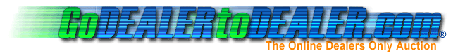

Refund Policy
Effective Date - April 17, 2005
Overview
Our refund policy statement applies to any and all services under the domain and sub-domains of godealertodealer.com and dealertodealer.com. By signing the user agreement, you acknowledge and understand all conditions described in the user agreement and this refund policy. It is effective the date of signature of the user agreement. Changes to the refund policy may be made and will become effective when posted on the site. Any and all changes will be announced in the NEWS section of the site, which is viewable immediately when signing in.
This statement describes any refunds by Go DEALER to DEALER.
1. Auction Refund
Go DEALER to DEALER (Dealer to Dealer, L.L.C.) is not responsible or liable in any way with the funds transmitted or received for an auction. Any refunds for auctions will be dealt with directly through the companies involved. If a dispute arises regarding the auction, the arbitration methods will be used. Refunds for the auctions will be determined by the arbitrator.
2. Fee Refunds
We collect fees for services already used. The fee schedule is described in the User Agreement. These fees are assessed when an auction closes with a winning bid or a pull option is selected. These fees are shown before clicking on any bids and also when confirming a pull option.
All fees are grouped and batched together monthly and are visible for up to one year in the My Account section under My Invoice History. Go DEALER to DEALER does not offer any refunds on these fees. All fees are known before finalization of the transaction is made by viewing the fee schedule for buy and sell fees. The pull fees are shown when the pull option is made. During arbitration, the arbitrator may include the fees when making final judgment.
3. Suspension of Account
If a dealer has been suspended by Go DEALER to DEALER, there are no refunds for any fees. Any and all fees batched for that month are immediately due and will be processed the same day of suspension.
If the suspension is due to lack of payment, the company will provide necessary means to clear any and all fees due immediately through the billing department. Late fees may also be due with this process. For more information about these fees, see the User Agreement under section 2, Fees and Payments.